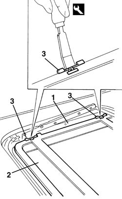
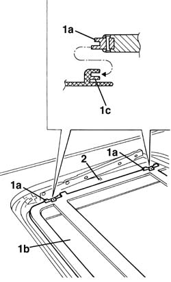

7030B28 sliding roof blind - r+r
- Path
- Procedures > 70 FITTINGS > 7030 SUN ROOF AND HOOD > 7030B sliding roof > 7030B28 sliding roof blind - r+r
- Kind
- repair procedure (removal / refitting; the operation number is the code)
- Applies to
- all engines; all production periods
- Interactive page
- https://sloeber94.github.io/elrnDB-a156/en/#/3238759
Applies to: all engines; all production periods
 Removing
Removing
 Refitting
Refitting7030B18 sliding roof glass - r+r
1. Place the slide in the open position
2. Place the drape in the close position
3. With the suitable tool press light the pads at the interior and remove them from the guides
 | Name | Country |
|---|---|---|
3 | Scraper blade | 1.823.014.000 |

Applies to: all engines; all production periods
Remove the drape
Applies to: all engines; all production periods
Refitting
Removing1. With the suitable tool install the pads (1a) of the drape (1b) in their guides (1c).
In the figure is shown the correct installation of the pads
| Name | Country |
|---|---|---|
1 | Scraper blade | 1.823.014.000 |
2. Place the slide in open position

Applies to: all engines; all production periods
7030B18 sliding roof glass - r+r
Verify the correct functionality of the drape and the sliding roof